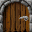

| Dirt | The most common formation. Jim can dig through it, but it stops everything else except amoeba. | |
| Boulder | Found throughout the caves. They fall down if there's no support under them and falls off unstable surfaces such as diamonds, other boulders and brick walls. They are quite dangerous when falling down, but also useful for hitting enemies. Jim can push boulders around with a little efford. | |
| Diamond | Jim's goal is to get as much of these as possible. He has to collect a certain amount to complete a cave. Diamonds behaves much in the same way as boulders, so don't get hit on the head by them. | |
| Fragile Diamond | These are as valuable as normal diamonds, but shatter if they fall down or is hit by falling objects. | |
| Granite Ore | Hit it hard with a boulder and a diamond will appear! Falls down like a boulder. | |
| Wall | Normal brick wall. Can be destroyed by explosions. | |
| Solid Wall | Reenforced wall. Cannot be destroyed in any way. | |
| Magic Wall | Looks like a normal brick wall in it's inactive state, except that it seems more perfect. When hit by a boulder or diamond it will activate and start glowing. If there is free space availible under it then boulders that hit will be changed to diamonds and visa versa. The wall is active for a level specific timelapse and will eventually go back to its inactive state where it will dissolve boulders and diamonds. | |
| Expanding Wall | There are two types of expanding wall: a horizontal and a vertical. They look like normal brick wall, but will expand in horizontal or vertical directions if free space is availible. Quite rare, but sometimes used for traps so watch out! | |
| Plasma | Expands random in all directions when free space is availible. The speed is level specific, but often quite fast so be careful when releasing it if you don't want to get trapped. | |
| Protozo | Quite common critter in the caves. They move around through free space and will turn left if possible. If one of them comes in contact with Jim it will explode and kill him at the spot. When hit by a falling object they'll also explode and this is often useful for removing brick walls and other obstacles. Amoeba is highly dangerous for Protozos too. | |
| Cave Gull | Hit these creatures with falling objects or bring them into contact with amoeba and you won't regret it! Their explosion will result in 9 diamonds, but don't forget that they still would like to include Jim in that explosion and are as deadly as protozos. They turn right if possible. | |
| Eater | Not only will these nasty two headed buggers kill Jim if they run into him, they also gourge themselves in diamonds. Make sure to get rid of them if possible. They turn right if free space is availible. | |
| Aggressor | The horror of every miner! They are very rare, but their accute senses will help them to hunt Jim. Luckily they are not very clever and you should be able to outsmart them by hiding behind complex obstacles. | |
| Cilia | This annoying critter will move in straight lines and pick random directions when obstacles are encountered. | |
| Amoeba | Expands random in all directions through dirt and free space at a cave specific speed. Amoeba will kill all creatures except Jim and is therefore often useful for killing large quatities of baddies! Amoeba turns into boulders when it reaches a certain cave specific size. If Jim succeed in enclosing all amoeba in a cave and by this makes it impossible to grow futher it will transform into diamonds! | |
| TNT Box | Left in the caves by long forgotten miners. When you active the detonator all TNT boxes the cave will explode, so make sure these are in the right places before doing so. Jim can push them around like boulders and they behave much in the same way. | |
| Detonator | When a detonator is activated all TNT boxes in the cave will explode! | |
| Drop Bomb | These bombs are extremely easy to set off! They'll go off if other objects hit them or if they fall down and hits other objects. | |
| Tubes | There are two basic types of tubes: bi-directional and one-way. Jim can move trough bi-directional tubes from both sides, while one-way tubes only allows him to enter from one side. Only Jim can pass tubes. | |
| Start Door |  | Jim enters a level through the start door. |
| Exit Door | You can exit a level through this door and advance to the next cave when it's not locked. It will unlock when Jim has enough diamonds. Be careful not to include the exit door in explosions! |